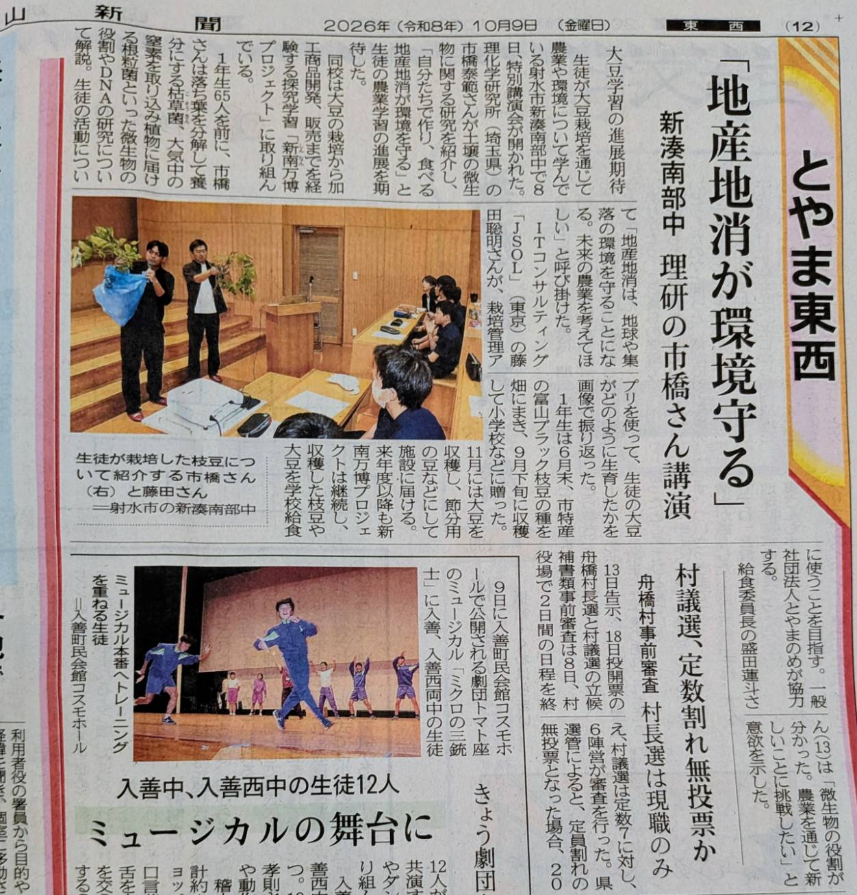
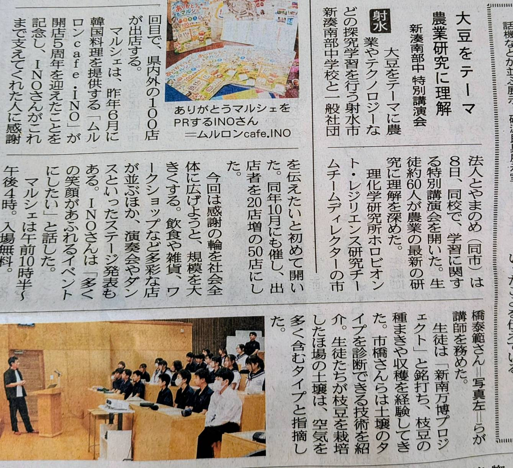

栽培データで成長を振り返る
- 6月末の種まきから10月まで、大豆がどのように生育してきたかを栽培管理アプリで確認
- 畑で自分たちが見てきた作物の姿と、デジタル上に蓄積された栽培情報を重ねて考察
- 経験や感覚だけでなく、データから作物の変化を読み解く農業について学習
- AIやデジタル技術が、栽培計画や判断を支える可能性を知る
October 8 / 2026
新湊南部中学校で、株式会社JSOLの藤田聡明氏と理化学研究所の市橋泰範氏を迎えた特別講演会を開催しました。 生徒たちは、自分たちが育ててきた大豆の生育を栽培管理アプリで振り返り、農業研究とデジタル技術が未来の農業をどう支えるかを学びました。
Guest Speakers
株式会社JSOL ビジネス・デザイン&マーケティング部
栽培管理アプリを使い、生徒たちが育ててきた大豆の生育を画像やデータとともに振り返りました。
国立研究開発法人理化学研究所 ホロビオント・レジリエンス研究チーム
土壌や微生物、植物の関係を研究事例から紹介し、地産地消と持続可能な農業について問いかけました。
Media Coverage

土壌や微生物の研究、栽培管理アプリによる生育の振り返り、地産地消と環境のつながりについて学ぶ様子が紹介されました。画像を押すと拡大表示できます。

栽培した畑の土壌や大豆の生育データを専門家とともに見ながら、農業研究とテクノロジーへの理解を深めた講演会が紹介されました。画像を押すと拡大表示できます。